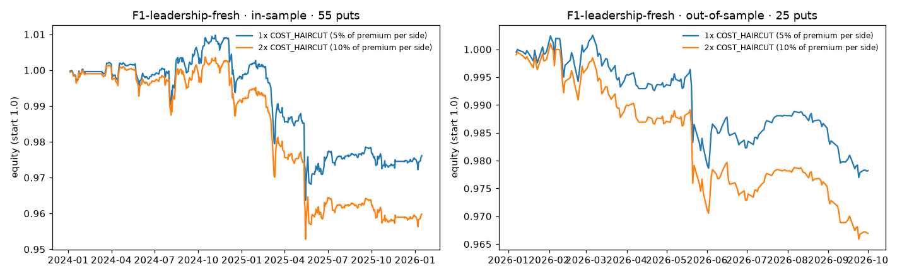

Claim tested (pre-registered): after a fresh leadership-change 8-K (the filing is the first public disclosure), the option chain over-prices the coming move, so a cash-secured put sold at the post-filing close beats ordinary days for the same stocks; after a stale one (filed days after a press release) it does not.
Result: rejected, in the opposite direction, and the rejection replicated in sign. Net of costs, the fresh-filing put seller did −1.16% worse than ordinary days in-sample (n = 55) and −0.71% out-of-sample (n = 25), averaged over h = 21, 42 and expiry. The fresh−stale gap is negative in both windows; its 95% interval excludes zero out-of-sample only. As a portfolio the strategy lost money in both windows at 1× and 2× costs (Sharpe −0.57 in-sample, −1.31 out-of-sample). The actionable finding for a PM is a “don’t”: do not sell downside protection after fresh governance shocks.
Everything else we tested is null, including our first hypothesis (JEV, §2), a variance-premium map over 18 categories and 12 conditional hypotheses; §5.4 counts every variant.
H1 (first, JEV).
“Within the same 8-K disclosure category, filings that JEV scores as higher in semantic event intensity, confidence, and judgment stability will be followed by larger realized stock moves relative to the pre-event options-implied move than lower-scoring filings. We expect this relationship to be strongest when JEV identifies a disclosure as both economically significant and non-routine, indicating that the coarse 8-K category alone does not fully capture the information relevant to options-market pricing.”
H2 (freshness; the headline test), written after H1 failed, before any H2 P&L (tag freeze-v2):
“We expect leadership-change 8-Ks at the top 100 to over-price the move only when the 8-K is the first public disclosure. Holders who are surprised by a governance shock buy protection right after it and over-pay. When the 8-K is filed days after a press release, the chain has already re-priced, and there’s no premium left. If true, the cash-secured put entered at the post-filing close beats ordinary days on fresh filings but not on stale ones. It fails if fresh and stale filings earn the same.”
Who is on the other side. The thesis names surprised holders buying protection after a governance shock as the counterparty who over-pays; we sell them the put. Their identity is not observed in the data. Why it is not obvious: an 8-K must be filed within four business days, so the same Massive category is sometimes news and sometimes a recap. Freshness is measured from the EDGAR header, not from the category, which is exactly the information the coarse tag hides. Failure conditions (pre-registered): fresh vs ordinary days ≤ 0, or fresh − stale ≤ 0, or no decline in edge with filing lag.
ceo_appointment, ceo_departure, cfo_appointment,
cfo_departure, executive_officer_appointment; one event per ticker and filing session.
Found: in-sample 62 fresh / 108 stale; out-of-sample 27 fresh / 42 stale (fewer are priced: some have no tradeable chain).runs/PREREG.md fixes windows it first misstated; the windows run are the notebook defaults.runs/ledger.jsonl; the harness refuses a second out-of-sample look. Multi-category tests use Benjamini-Hochberg (q = 0.10); only passers earn an out-of-sample look.| In-sample 2024–25 | Out-of-sample 2026 | |||||
|---|---|---|---|---|---|---|
| Horizon | Fresh − ord. | Stale − ord. | Fresh − stale | Fresh − ord. | Stale − ord. | Fresh − stale |
| h=1 | −0.14%[−0.41, +0.14] | −0.31%[−0.57, −0.09] | +0.18%[−0.14, +0.53] | +0.04%[−0.21, +0.29] | +0.03%[−0.23, +0.27] | +0.02%[−0.29, +0.31] |
| h=2 | −0.28%[−0.71, +0.12] | −0.04%[−0.29, +0.21] | −0.24%[−0.67, +0.21] | −0.06%[−0.46, +0.31] | +0.06%[−0.31, +0.45] | −0.12%[−0.58, +0.31] |
| h=3 | −0.28%[−0.78, +0.15] | −0.09%[−0.42, +0.22] | −0.19%[−0.67, +0.26] | +0.05%[−0.37, +0.46] | −0.06%[−0.46, +0.36] | +0.12%[−0.41, +0.62] |
| h=5 | −0.61%[−1.28, −0.05] | −0.26%[−0.65, +0.11] | −0.35%[−0.99, +0.25] | −0.00%[−0.50, +0.48] | +0.14%[−0.47, +0.72] | −0.14%[−0.76, +0.51] |
| h=10 | −0.85%[−1.80, +0.02] | −0.25%[−0.75, +0.26] | −0.60%[−1.60, +0.34] | −0.25%[−1.01, +0.51] | +0.20%[−0.77, +1.09] | −0.45%[−1.52, +0.67] |
| h=21 | −0.52%[−1.52, +0.38] | −0.30%[−0.98, +0.38] | −0.22%[−1.24, +0.72] | −0.58%[−1.86, +0.75] | +0.55%[−0.87, +1.81] | −1.13%[−2.76, +0.51] |
| h=42 | −1.00%[−2.53, +0.44] | −0.06%[−1.12, +1.02] | −0.94%[−2.38, +0.45] | −1.65%[−3.80, +0.31] | +1.80%[+0.55, +2.99] | −3.44%[−5.59, −1.56] |
| h=63 | −1.59%[−3.39, +0.05] | +0.01%[−1.43, +1.29] | −1.60%[−3.51, +0.15] | −1.59%[−4.96, +1.18] | +2.01%[+0.13, +3.94] | −3.60%[−6.87, −0.79] |
| expiry | −1.97%[−4.07, −0.05] | −0.19%[−1.73, +1.28] | −1.78%[−3.83, +0.17] | +0.10%[−3.58, +3.40] | +3.76%[+1.29, +6.20] | −3.66%[−6.83, −0.89] |
| Edge (avg 21, 42, exp) | −1.16%CI excl. 0: 1/3 | −0.18%CI excl. 0: 0/3 | −0.98%CI excl. 0: 0/3 | −0.71%CI excl. 0: 0/3 | +2.04%CI excl. 0: 2/3 | −2.74%CI excl. 0: 2/3 |
| n (events / control) | 55 / 105 | 95 / 105 | 55 / 95 | 25 / 102 | 40 / 102 | 25 / 40 |
Difference in mean P&L per $1 of spot (%), net of a 5%-per-side haircut; 95% bootstrap interval below each value. n is the number of events at the edge horizons (fresh, stale, ordinary days).
Fresh vs ordinary days is negative at the edge horizons in both windows: −1.16% net in-sample (gross −1.19%) and −0.71% out-of-sample (gross −0.70%). In-sample the interval excludes zero at expiry; out-of-sample it includes zero everywhere. Fresh − stale (the pre-registered primary test) is −0.98% in-sample (not significant) and −2.74% out-of-sample, excluding zero at 2 of 3 edge horizons. Under the pre-registered gate (significant in-sample first) this is not a finding, only a consistent sign. Stale vs ordinary days flips from −0.18% to +2.04%: unstable, not a finding. Early horizons (h ≤ 10) are near zero in both windows, so the damage happens over weeks, not on the filing day. Gross versions of this table are in Appendix A1; costs move each edge by a few basis points because both arms pay them.
| Window · costs | n | Ann. return | Ann. vol | Sharpe | Max DD | Skew | Worst month | Turnover /yr | Worst event | Max open |
|---|---|---|---|---|---|---|---|---|---|---|
| In-sample · 1x | 55 | −1.18% | 2.06% | −0.57 | −4.56% | −2.26 | −1.51% | 2.72× | −16.5% | 7 |
| In-sample · 2x | 55 | −2.01% | 2.08% | −0.97 | −5.07% | −2.30 | −1.62% | 2.72× | −16.9% | 7 |
| Out-of-sample · 1x | 25 | −2.98% | 2.27% | −1.31 | −2.55% | −1.89 | −1.11% | 3.41× | −10.1% | 8 |
| Out-of-sample · 2x | 25 | −4.55% | 2.30% | −1.98 | −3.51% | −1.84 | −1.27% | 3.41× | −11.2% | 8 |
Daily returns on capital; costs are half on entry and half on exit; 2× doubles the haircut. Worst event is per $1 of notional (1/10 of capital).

harness.daily_returns): in-sample left, out-of-sample right, 1× and 2× costs.Neighbours. Over the 18-cell grid of expiry bucket (1m, 2m, 3-6m) × OTM (3%, 5%, 10%) × entry (pre, post), fresh vs ordinary days is below zero in 18 of 18 cells in-sample and 18 of 18 out-of-sample: a plateau, not a tuned peak (gross; Appendix A2). Years. Gross edge 2024 −0.70% (n = 27), 2025 −1.61% (n = 32), 2026 −0.70% (n = 27); no single year carries it. The simple explanation. Two things hurt the put seller in both windows: fresh-event stocks fell more than on ordinary days (own-stock move edge −1.32% in-sample, −1.36% out-of-sample), and they moved more than the chain priced (median |realized| ÷ implied 1.08 vs 0.75 on ordinary days in-sample; 0.82 vs 0.65 out-of-sample; exploratory). With no index data we cannot rule out that part of the direction effect is market beta.
| Test | Label | Result (net of costs unless noted) | Verdict |
|---|---|---|---|
| H2 freshness (F1): 3 comparisons, §5.1 | pre-reg. | fresh vs ordinary days negative in both windows | rejected; sign replicated |
| H1 JEV, leadership pairings scored by JEV (5 strategy tests) | pre-reg. | Gross. Cash-secured put: P-leadership −0.53% (n = 150); CEO change −1.01%, without its best 3 events +0.08%; CFO/exec −0.58%. Covered call: −1.78%, −1.10% | null / fragile |
H1 JEV judgment stability (jack-uf), cfo_appointment, 9 horizons × 3 score cutoffs | pre-reg. | stability coefficient’s 95% CI includes 0 in all 27 cells | null |
| Blinded information novelty (jack-uf), 9 horizons × earnings in/out | pre-reg. | horizon gate passed in 0 of 18 cells | null |
| Good-news long call; earnings put and covered call | pre-reg. | long call −0.15% (n = 103); earnings put +0.39%, covered call +0.83% in-sample (gross) | earnings passed in-sample, failed its one out-of-sample look* |
| Variance-premium map: 18 categories, log(|realized| ÷ implied), events − ordinary days | pre-reg. | BH q = 0.10: 0 of 18 pass; smallest p 0.182 (bylaw amendment). Outside leadership, fresh − stale +0.003 [−0.102, +0.102], p 0.999, n 666 / 547 | null map; freshness does not generalize |
| 12 conditional hypotheses (filing-day move, term structure, skew, volume, Jev tone, bundling, resolution), 1m options | pre-reg. | 10 ran, 2 too few events; BH q = 0.10: 0 of 10 pass; smallest p 0.059 (H12 resolution events, edge −0.88% [−1.63%, +0.03%]) | null |
| Move-ratio diagnostic; 18-cell sensitivity grid; portfolio; by-year; starter CFO example; KO sample | explor. | §5.2–5.3, notebook sections 1–11 | descriptive only |
pre-reg. = pre-registered; explor. = exploratory. *Its out-of-sample result is in runs/ledger.jsonl and is not re-printed by the notebook. jack-uf’s branch also records 29 earlier experiment decisions (notebook output B3), and none reports a candidate edge.
Variant count. Pre-registered tested cells printed by the notebook: 3 (F1) + 8 (earlier pairings) + 19 (map + its freshness test) + 10 (conditional hypotheses) + 27 (JEV stability) + 18 (novelty) = 85, plus 36 exploratory sensitivity cells. Out-of-sample looks taken: three, each once (F1, earnings, map freshness test). At this count a few starred horizons are expected by chance. That is why we report only the result that held its sign out-of-sample, and why we call it a “don’t”, not an edge.
Sizing: 1/10 of capital per event, cash-secured (collateral = strike × 100), at most 10 open; the backtest peaked at 7 open in-sample and 8 out-of-sample, so it never ran uncollateralized. Measured tail: worst single event −16.5% per $1 notional in-sample (−10.1% out-of-sample), worst month −1.51%, max drawdown −4.56%; skew −2.26 is the short-volatility tail the track warns about. Correlation: a short put is long the stock, so a market-wide sell-off hits every open position at once; with up to 8 concurrent positions that is the main risk, and without index data we could not hedge or measure it. Assignment: covered by the collateral; early assignment and dividends are not modelled. Kill rule for the original trade: do not run it after fresh leadership 8-Ks. If a desk wanted to act on the evidence, the mirror trade (buying the put) is the one the data point to. That is an untested prediction, and it would carry the opposite risk: steady premium bleed on ordinary days.
Capacity is measured from the sold put's own traded volume over the 10 calendar days before the pre-event session. The median is 29 contracts per session in-sample (18 out-of-sample); 2% of in-sample events had no volume at all. At 1% of that volume one position carries about $5k of notional (median; $2k at the 25th percentile), and at 10% about $50k ($19k). Out-of-sample: $4k and $39k. With at most 10 positions open, 10% participation caps the book near ten times the per-position figure, roughly half a million dollars. Costs in bps: the 5%-of-premium haircut is a median 13 bps of notional per side in-sample (interquartile 10–18) and 18 bps out-of-sample (15–26). The 5%-OTM, 3-6-month puts on these names are thin. This is a research finding about pricing, not a scalable book.
What would break it. (a) In the sealed window, fresh vs ordinary days turns positive. (b) A market-index control removes the loss, so it was beta, not the filings. (c) Point-in-time membership changes the sign. (d) Dropping a handful of extreme events flips it.
Sealed-window predictions (committed in runs/PREREG.md before the judges’ window): fresh vs ordinary days is negative; fresh − stale is negative;
with roughly three months of data both intervals include zero, so the sign is the prediction, not significance. If the sign flips, we predicted the fragility:
the out-of-sample fresh vs ordinary days interval already includes zero.
| In-sample 2024–25 | Out-of-sample 2026 | |||||
|---|---|---|---|---|---|---|
| Horizon | Fresh − ord. | Stale − ord. | Fresh − stale | Fresh − ord. | Stale − ord. | Fresh − stale |
| h=1 | −0.17%[−0.44, +0.12] | −0.30%[−0.54, −0.08] | +0.13%[−0.19, +0.47] | +0.00%[−0.25, +0.27] | +0.12%[−0.13, +0.36] | −0.12%[−0.39, +0.16] |
| h=2 | −0.31%[−0.75, +0.09] | −0.02%[−0.27, +0.23] | −0.29%[−0.73, +0.16] | −0.08%[−0.47, +0.33] | +0.15%[−0.22, +0.55] | −0.23%[−0.67, +0.22] |
| h=3 | −0.31%[−0.81, +0.13] | −0.07%[−0.40, +0.24] | −0.24%[−0.72, +0.20] | +0.05%[−0.37, +0.49] | +0.03%[−0.36, +0.42] | +0.03%[−0.51, +0.53] |
| h=5 | −0.65%[−1.30, −0.07] | −0.24%[−0.63, +0.14] | −0.41%[−1.04, +0.20] | −0.01%[−0.54, +0.50] | +0.22%[−0.37, +0.78] | −0.23%[−0.86, +0.42] |
| h=10 | −0.88%[−1.86, +0.00] | −0.23%[−0.75, +0.30] | −0.65%[−1.67, +0.29] | −0.25%[−1.03, +0.51] | +0.28%[−0.69, +1.18] | −0.54%[−1.64, +0.59] |
| h=21 | −0.56%[−1.56, +0.37] | −0.28%[−0.96, +0.41] | −0.28%[−1.31, +0.68] | −0.58%[−1.84, +0.74] | +0.64%[−0.77, +1.87] | −1.21%[−2.79, +0.37] |
| h=42 | −1.03%[−2.57, +0.41] | −0.04%[−1.12, +1.04] | −0.99%[−2.42, +0.39] | −1.67%[−3.76, +0.29] | +1.88%[+0.65, +3.10] | −3.55%[−5.68, −1.70] |
| h=63 | −1.63%[−3.43, +0.01] | +0.02%[−1.44, +1.31] | −1.65%[−3.58, +0.10] | −1.55%[−4.81, +1.18] | +2.14%[+0.25, +4.09] | −3.69%[−6.90, −0.93] |
| expiry | −1.99%[−4.07, −0.08] | −0.16%[−1.73, +1.31] | −1.83%[−3.87, +0.12] | +0.16%[−3.46, +3.50] | +3.86%[+1.41, +6.27] | −3.70%[−6.81, −0.95] |
| Edge (avg 21, 42, exp) | −1.19%CI excl. 0: 1/3 | −0.16%CI excl. 0: 0/3 | −1.03%CI excl. 0: 0/3 | −0.70%CI excl. 0: 0/3 | +2.13%CI excl. 0: 2/3 | −2.82%CI excl. 0: 2/3 |
| n (events / control) | 55 / 105 | 95 / 105 | 55 / 95 | 25 / 102 | 40 / 102 | 25 / 40 |
| Bucket | OTM | Entry | Edge | sig | n |
|---|---|---|---|---|---|
| In-sample | |||||
| 1m | 3% | pre | −0.38% | 0 | 55 |
| 1m | 3% | post | −0.65% | 0 | 56 |
| 1m | 5% | pre | −0.00% | 0 | 51 |
| 1m | 5% | post | −0.12% | 0 | 54 |
| 1m | 10% | pre | −0.91% | 0 | 45 |
| 1m | 10% | post | −1.05% | 1 | 44 |
| 2m | 3% | pre | −1.12% | 0 | 50 |
| 2m | 3% | post | −1.25% | 0 | 51 |
| 2m | 5% | pre | −1.02% | 0 | 50 |
| 2m | 5% | post | −1.30% | 0 | 50 |
| 2m | 10% | pre | −1.21% | 0 | 49 |
| 2m | 10% | post | −1.30% | 1 | 49 |
| 3-6m | 3% | pre | −1.21% | 0 | 55 |
| 3-6m | 3% | post | −1.32% | 0 | 55 |
| 3-6m | 5% | pre | −1.11% | 0 | 54 |
| 3-6m | 5% | post | −1.19% | 1 | 55 |
| 3-6m | 10% | pre | −0.91% | 0 | 55 |
| 3-6m | 10% | post | −1.03% | 0 | 54 |
| Out-of-sample | |||||
| 1m | 3% | pre | −1.24% | 0 | 22 |
| 1m | 3% | post | −0.90% | 0 | 21 |
| 1m | 5% | pre | −1.06% | 0 | 22 |
| 1m | 5% | post | −0.23% | 0 | 20 |
| 1m | 10% | pre | −0.31% | 0 | 21 |
| 1m | 10% | post | −0.10% | 0 | 20 |
| 2m | 3% | pre | −2.56% | 3 | 26 |
| 2m | 3% | post | −2.06% | 0 | 26 |
| 2m | 5% | pre | −2.49% | 3 | 26 |
| 2m | 5% | post | −2.05% | 0 | 26 |
| 2m | 10% | pre | −1.72% | 3 | 26 |
| 2m | 10% | post | −1.41% | 1 | 26 |
| 3-6m | 3% | pre | −0.76% | 0 | 25 |
| 3-6m | 3% | post | −0.25% | 0 | 25 |
| 3-6m | 5% | pre | −1.04% | 0 | 24 |
| 3-6m | 5% | post | −0.70% | 0 | 25 |
| 3-6m | 10% | pre | −0.49% | 1 | 24 |
| 3-6m | 10% | post | −0.27% | 1 | 24 |
| Category | n | diff | 95% CI | p | BH pass |
|---|---|---|---|---|---|
| debt issuance | 132 | −0.070 | [−0.227, +0.086] | 0.383 | False |
| executive compensation change | 137 | +0.038 | [−0.109, +0.182] | 0.572 | False |
| annual meeting results | 137 | −0.021 | [−0.194, +0.224] | 0.875 | False |
| investor presentation | 137 | +0.042 | [−0.162, +0.246] | 0.686 | False |
| underwriting agreement | 133 | −0.084 | [−0.223, +0.036] | 0.188 | False |
| executive officer departure | 115 | −0.008 | [−0.175, +0.154] | 0.906 | False |
| quarterly earnings | 117 | −0.027 | [−0.276, +0.197] | 0.855 | False |
| shareholder proposal outcome | 112 | −0.022 | [−0.178, +0.201] | 0.869 | False |
| executive officer appointment | 89 | +0.090 | [−0.097, +0.276] | 0.334 | False |
| director departure | 91 | +0.049 | [−0.129, +0.236] | 0.605 | False |
| director appointment | 88 | +0.108 | [−0.055, +0.271] | 0.204 | False |
| dividend declaration | 74 | −0.027 | [−0.240, +0.232] | 0.791 | False |
| credit facility | 56 | +0.122 | [−0.108, +0.338] | 0.312 | False |
| guidance issuance or update | 52 | +0.042 | [−0.236, +0.292] | 0.769 | False |
| business update | 49 | +0.056 | [−0.166, +0.266] | 0.629 | False |
| bylaw amendment | 43 | −0.179 | [−0.459, +0.089] | 0.182 | False |
| guarantee or letter of credit | 32 | +0.157 | [−0.177, +0.437] | 0.332 | False |
| debt retirement | 35 | −0.147 | [−0.461, +0.139] | 0.307 | False |
| Hypothesis | n sel / pool | Status | Edge | 95% CI | p | Own net 2× | BH |
|---|---|---|---|---|---|---|---|
| H01 drift after drop | 334 / 1150 | OK | +0.16% | [−1.32%, +1.60%] | 0.836 | +0.74% | False |
| H02 reversal after drop | 365 / 1150 | OK | +0.18% | [−0.53%, +0.82%] | 0.618 | +0.28% | False |
| H03 inverted term | 307 / 1102 | OK | −0.40% | [−2.03%, +1.21%] | 0.620 | +0.97% | False |
| H04 rich put skew | 351 / 1110 | OK | −0.01% | [−0.69%, +0.60%] | 0.983 | +0.20% | False |
| H05 sticky vol | 299 / 1130 | OK | +0.15% | [−1.31%, +1.60%] | 0.804 | +0.70% | False |
| H06 attention calls | 328 / 1162 | OK | −0.03% | [−1.54%, +1.36%] | 0.965 | +1.43% | False |
| H07 prefiling put volume | 329 / 1162 | OK | −0.37% | [−1.84%, +1.16%] | 0.640 | +0.32% | False |
| H08 negative tone | 19 / 1289 | OK | −2.35% | [−5.93%, +1.42%] | 0.232 | −1.47% | False |
| H09 outside successor | 12 / 47 | TOO FEW (<15 selected) | False | ||||
| H10 bundled filing | 112 / 1289 | OK | −1.25% | [−3.04%, +0.57%] | 0.175 | −0.32% | False |
| H11 dividend raise | 8 / 76 | TOO FEW (<15 selected) | False | ||||
| H12 resolution events | 49 / 57 | OK | −0.88% | [−1.63%, +0.03%] | 0.059 | −0.34% | False |
These are the notebook's run(STUDY_START, STUDY_END) numbers. They differ from runs/hyp/RESULTS.md because run() draws its
ordinary-day pool for the window it is given. Neither version passes BH.
runs/ledger.jsonl only.RUN_OOS = False; the F1 out-of-sample numbers come from the F1 findings cell.